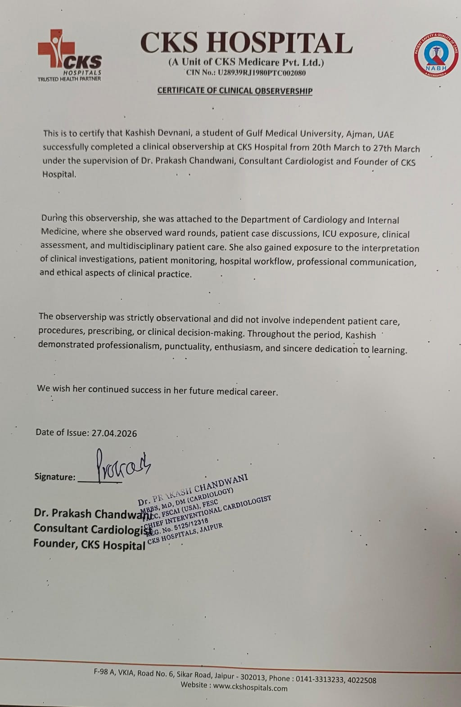

The White Coat Journal
GMU e-Portfolio Framework
Nine integrated domains that define a physician's professional identity — from clinical mastery and patient-centred care to lifelong learning, ethical leadership, and social accountability.
Domains
9Core Competencies
Framework
GMUe-Portfolio Standard
Evidence Documented
CPR · ObservershipCertified & Verified
Institution
Gulf MedicalUniversity, Ajman, UAE
All Nine Domains
Aligned with the GMU medical education framework, these competencies demonstrate integrated development across clinical, ethical, and professional domains.
I · Medical Expert
Demonstrates a solid command of clinical knowledge, diagnostic reasoning, and essential technical skills for safe, effective patient care. Applies scientific principles with sound clinical judgement across diverse healthcare settings.
II · Patient Care
Places patients at the core of care by safeguarding their dignity, safety, and well-being. Advocates for equitable access to healthcare and supports public health initiatives that strengthen community outcomes.
Read ReflectionIII · Communication
Builds meaningful, trusting relationships with patients, families, and healthcare professionals through clear, respectful, and empathetic communication. Ensures understanding in every clinical encounter.
Read ReflectionIV · Collaborator
Works effectively within interprofessional teams, demonstrating initiative, leadership, innovation, and adaptability. Promotes teamwork and shared responsibility to achieve optimal healthcare outcomes.
Read ReflectionV · Socially Accountable
Recognises medicine's responsibility to society by addressing public health needs, advocating for social justice, and promoting the well-being of local and global communities.
Read ReflectionVI · Self Enhancer
Actively pursues personal and professional development through reflection, feedback, and continuous improvement. Shows commitment to lifelong learning and excellence in medical practice.
Read ReflectionVII · Health Systems
Understands and advocates within healthcare systems to improve patient care delivery. Champions quality improvement, resource stewardship, and evidence-based policy in all settings.
Read ReflectionVIII · Professionalism
Upholds integrity, accountability, and ethical practice in all professional interactions. Demonstrates respect, empathy, and professionalism with patients, colleagues, and the wider medical community.
Read ReflectionIX · Evidence Based
Engages in lifelong learning through critical evaluation of research and evidence. Translates scientific findings into clinical decision-making and contributes to the advancement of medical knowledge.
Read ReflectionApplies medical knowledge, clinical skills, and professional values to deliver high-quality, patient-centred care — from initial assessment through diagnosis and management.
CKS Hospital, Jaipur · Dr. Prakash Chandwani, Cardiologist · March 2026
📸 Evidence & Certification

In March 2026, I completed a comprehensive clinical observership at CKS Hospital in Jaipur, India, under the supervision of Dr. Prakash Chandwani, a consultant cardiologist. This immersive experience spanned cardiology ward rounds, intensive care unit (ICU) rotations, and surgical theatre observations, exposing me to the full continuum of patient care — from initial admission through critical care management and operative interventions.
In March 2026, I undertook a clinical observership at CKS Hospital in Jaipur under Dr. Prakash Chandwani, a consultant cardiologist. The observership encompassed ward rounds where I observed patient assessments and clinical decision-making for cardiovascular conditions, ICU exposure where I witnessed critical care monitoring and ABG interpretation, and surgical theatre observations of four procedures: tympanic membrane grafting (ENT), total knee replacement (orthopaedics), transurethral resection of the prostate (urology), and vocal cord biopsy (ENT). Each setting involved multidisciplinary teams including surgeons, anaesthesiologists, nurses, and allied health professionals. This was my first immersive clinical experience outside the classroom.
Emotionally, I felt a profound sense of awe and intellectual humility. Witnessing the systematic approach during ward rounds — where history, examination, and investigation findings coalesced into management plans — made me acutely aware of the depth of clinical reasoning required. In the ICU, the urgency and precision of critical care monitoring was both intimidating and inspiring. During surgical observations, I experienced a mix of fascination and vulnerability: the choreography of the operating theatre, the anatomical precision required, and the weight of patient trust were palpable. I also felt motivated rather than overwhelmed, recognizing that these experiences represented the clinical reality I aspire to master.
Evaluating the experience, positive aspects included the structured learning environment: Dr. Chandwani frequently explained his clinical reasoning during ward rounds, surgical teams communicated procedural steps aloud, and I was able to observe the full patient journey from admission to theatre. The variety of specialties (cardiology, orthopaedics, urology, ENT) provided broad exposure. Less positive: my own passivity was a limitation. I hesitated to ask questions during ward rounds and surgical procedures, unsure whether my queries were appropriate in a busy clinical setting. This self-censorship meant I missed opportunities to deepen understanding in the moment. I also lacked sufficient pre-reading on the specific conditions, which limited my ability to follow discussions in real time.
Through analysis, the observership revealed the substantial gap between theoretical knowledge and clinical application. Medical school equipped me with anatomical and physiological foundations, but clinical practice requires simultaneous synthesis of history, examination, imaging, and pathophysiology — a skill developed through repeated exposure and deliberate practice. My hesitation to engage reflected uncertainty about my role as a pre-clinical student, a boundary rooted in perceived hierarchy rather than actual expectation. Research on medical education emphasizes that early clinical exposure is most effective when paired with active engagement and structured reflection, not passive observation. The surgical observations highlighted the procedural and teamwork dimensions of medical expertise — competencies not fully captured in textbooks. The ICU rotation underscored the importance of monitoring, interpreting dynamic data (ABG, vitals), and responding rapidly — skills central to critical care medicine.
In conclusion, I learned that clinical expertise extends far beyond diagnostic knowledge: it encompasses clinical reasoning under uncertainty, procedural skill, teamwork, and patient communication. I should have prepared focused learning objectives before each day of the observership — specific questions about conditions, procedures, or clinical workflows. Asking even one well-formed question during ward rounds or in the theatre would have reinforced learning and demonstrated active engagement. I also recognize that passive observation is insufficient for deep learning; future placements must be paired with pre-reading on relevant pathophysiology and followed by structured reflection. The diversity of surgical procedures taught me that medical expertise is specialty-specific but grounded in universal principles: anatomical precision, patient safety, and evidence-based practice.
My action plan for future clinical exposures is to prepare two to three specific learning objectives before each session, conduct pre-reading on the conditions or procedures I expect to encounter, and review relevant anatomy and pathophysiology the night before. I will actively seek brief debriefs with supervising clinicians at the end of each day to clarify concepts and ask focused questions. I will maintain a structured clinical observation journal documenting key cases, clinical reasoning patterns, and procedural workflows. I will also seek additional observerships across different specialties to build breadth of exposure while developing the habit of intentional, active observation rather than passive witnessing. This observership has reinforced my commitment to building clinical expertise systematically throughout medical school.
This reflection demonstrates mastery of clinical knowledge, diagnostic reasoning, procedural observation, and commitment to evidence-based practice through structured clinical learning and systematic skill development.
Dubai Heart Safe City Initiative · Basic Life Support Training
📜 Official Certification
I completed my CPR (Cardiopulmonary Resuscitation) and AED (Automated External Defibrillator) certification through the Dubai Heart Safe City initiative, a comprehensive basic life support training program designed to equip healthcare students and professionals with emergency response skills.
The training covered: chest compression technique and depth, airway management and rescue breathing, AED pad placement and defibrillation protocol, recognition of cardiac arrest and when to activate emergency services, and team-based resuscitation coordination. Hands-on simulation with manikins and AED trainers formed the core of the certification process, emphasizing procedural accuracy, confidence under pressure, and adherence to evidence-based protocols.
I completed CPR and AED certification through the Dubai Heart Safe City initiative, a structured basic life support training program. The training involved both theoretical instruction on cardiac arrest recognition, the chain of survival, and evidence-based resuscitation protocols, as well as hands-on simulation with manikins and AED trainers. I practiced chest compressions, airway management, rescue breathing, and AED pad placement under the supervision of certified instructors. The session concluded with a competency assessment where I successfully demonstrated the full resuscitation sequence. This was my first formal procedural training in emergency medicine and my first tangible experience of applying medical knowledge in a simulated life-saving context.
Emotionally, I felt a mixture of uncertainty at the start and confidence by the end. Initially, the physical demand of proper chest compressions and the pressure to perform the sequence correctly felt overwhelming. However, as I repeated the procedure with instructor feedback, muscle memory developed and my confidence grew. Holding the AED pads and delivering a simulated shock gave me a tangible sense of readiness and competence that theoretical study had not provided. I felt empowered — this was a skill I could genuinely use to save a life. There was also a sobering awareness of the responsibility: in a real cardiac arrest, execution must be immediate and accurate. This duality of empowerment and responsibility stayed with me throughout the training.
Evaluating the experience, the hands-on simulation was highly effective. Practicing on manikins allowed for repetition without patient risk, and real-time instructor feedback corrected my technique immediately. The structured protocol (check responsiveness, call for help, begin compressions, apply AED) was clear and evidence-based, making it easy to follow under simulated pressure. The certification gave me immediate procedural competence and a credential recognized across healthcare settings. Less positive: the simulated environment cannot fully replicate the emotional intensity and chaos of a real cardiac arrest. I also realized that while I know the protocol, maintaining composure in a true emergency will require additional mental preparation and potentially more advanced training (ACLS) in the future.
Through analysis, the effectiveness of this training lies in its alignment with evidence-based resuscitation science. The 2020 American Heart Association (AHA) and European Resuscitation Council (ERC) guidelines emphasize high-quality chest compressions (rate 100-120/min, depth 5-6 cm), minimizing interruptions, and early defibrillation — all central to the training I received. The simulation-based approach is supported by medical education research, which shows that procedural skills are best learned through deliberate practice with immediate feedback. My initial uncertainty reflected normal skill acquisition: competence develops through repetition, not innate ability. The confidence I gained by the end demonstrates the value of structured, hands-on training for procedural competencies. This experience also highlighted a key aspect of the Medical Expert competency: procedural skills are distinct from diagnostic knowledge and require separate, dedicated training to master.
In conclusion, I learned that procedural competence — even in basic life support — is achievable at any stage of medical training and provides tangible readiness that theoretical knowledge alone cannot deliver. I should have sought this certification earlier in my medical education to build foundational emergency skills from the outset. I also recognize the need to refresh this training regularly: resuscitation guidelines evolve, and procedural skills decay without practice. This certification demonstrated that medical expertise includes not just diagnostic reasoning but also procedural precision, teamwork in emergencies, and the ability to perform under pressure. I wish I had asked more questions about the evidence base for specific protocol elements (e.g., why 30:2 compression-to-breath ratio, why minimizing interruptions matters) to deepen my understanding beyond the procedural steps.
My action plan is to renew my CPR and AED certification annually to maintain procedural competence and stay current with evolving resuscitation guidelines. I will explore advanced life support training (ACLS) in my second or third year to build on this foundation and prepare for clinical rotations where I may encounter real cardiac emergencies. I will also volunteer for opportunities to practice BLS in supervised settings — such as health fairs, community first aid training, or simulation labs — to maintain muscle memory and build confidence under simulated pressure. I will review the latest AHA/ERC resuscitation guidelines independently to understand the evidence behind each protocol step, ensuring that my practice is not just procedural but also conceptually grounded. This certification is a starting point; my action plan is to build progressive competence in emergency medicine throughout my training.
This reflection demonstrates procedural mastery in emergency life support, adherence to evidence-based resuscitation protocols, and commitment to maintaining and advancing emergency medicine competencies through continuous professional development.
Places patients at the centre of all care decisions, safeguards dignity, and advocates for equitable access to healthcare services across diverse populations.
CKS Hospital Clinical Observership · Pre-Procedure Cardiac Consultation
During the CKS Hospital observership, I observed a consultant cardiologist conduct a pre-procedure consultation with an elderly patient scheduled for cardiac catheterisation. The consultant spent significant time explaining the procedure in simple, accessible terms, repeatedly checked the patient's understanding using teach-back methods, and addressed the family's concerns with equal care and patience. It was the first time I witnessed truly patient-centered communication in a live clinical setting, and it profoundly shaped my understanding of what compassionate care looks like in practice.
I felt deeply moved by the gentleness of the approach. The patient's visible relief after the explanation highlighted how powerful simple human reassurance can be in moments of medical uncertainty. The patient's complete trust in the consultant left me with a profound sense of the responsibility that comes with being a physician, and I felt eager to develop the same communication skills, empathy, and ability to create a safe space for vulnerable patients.
Evaluating the experience, the positive aspects included the consultant's deliberate use of lay language (avoiding medical jargon), sustained eye contact that conveyed presence and respect, and active listening techniques that made the patient feel heard. These behaviors were clearly learned through years of practice, not innate traits. The less positive aspect was that I had no opportunity to interact with the patient directly, which highlighted the distinction between witnessing care and actually providing it. Observation alone cannot develop the muscle memory of patient interaction.
Through analysis, I understood that the consultant's effectiveness stemmed from deliberate training in communication skills, not just clinical expertise. In Dubai's multicultural context—where patients come from diverse linguistic, cultural, and health literacy backgrounds—clear, compassionate explanation is especially critical to patient safety and satisfaction. This reinforced that patient care extends far beyond clinical procedures; the emotional, informational, and relational dimensions are equally vital to healing. The patient's anxiety was reduced not by the procedure itself, but by feeling informed, respected, and cared for as a person.
In conclusion, I learned that patient-centered care requires intentional skill development in communication, empathy, and cultural sensitivity. I wish I had documented specific phrases and techniques the consultant used—such as how they paused to invite questions, how they acknowledged the patient's fear without dismissing it, and how they involved the family as partners in care. A structured reflection journal from day one of the observership would have captured these valuable observations. I also recognize the need to engage with patients in supervised community settings to build my own communication repertoire before entering full clinical rotations.
My action plan is to keep a dedicated clinical observation journal recording patient interaction techniques I witness during future exposures, noting specific verbal and non-verbal behaviors that promote trust and understanding. I will volunteer in patient-facing community health roles (such as health screenings, patient education workshops, or support groups) to practice communication in low-stakes settings. I will also study evidence-based frameworks such as motivational interviewing, the teach-back method, and SPIKES protocol for delivering difficult news, so that I enter clinical rotations with deliberate communication tools already in my repertoire, rather than learning through trial and error at patients' expense.
This reflection demonstrates commitment to patient-centered communication, recognition of dignity and informed consent, and dedication to developing empathetic, culturally sensitive care practices that prioritize patient autonomy and well-being.
Builds meaningful, trusting relationships with patients, families, and healthcare teams through clear, respectful, and empathetic communication in every clinical encounter.
White Coat Ceremony 2024 · CKS Hospital Interprofessional Team Rounds
During my journey at GMU, I encountered two formative communication experiences: reciting the professional pledge at the White Coat Ceremony 2024 and observing structured clinical handovers during my CKS Hospital observership, where physicians transferred patient information efficiently across roles using the SBAR framework (Situation, Background, Assessment, Recommendation). At the ceremony, I felt nervous initially, then purposeful as I spoke the words that signified my entry into the medical profession. The handovers were humbling — the economy and precision of clinical communication inspired me and made me acutely conscious of the years of practice needed to achieve it.
At the ceremony, I felt proud and deeply respectful of the profession I was entering. Reciting the pledge with my peers was an emotional moment, establishing a connection to the broader medical community and its traditions. During the handovers, I felt humbled by the precision and efficiency of experienced clinicians, recognizing the vast distance between my current communication skills and the practiced expertise I witnessed. Yet this gap felt motivating rather than discouraging — a reminder of skills I could deliberately cultivate over time.
Evaluating these experiences, the ceremony provided a memorable first experience of formal professional communication in front of peers, faculty, and family, establishing communication as a core professional identity. The handovers exposed a gap: I could only partially follow the clinical content, limiting my comprehension of why certain choices were made during the information transfer. My attentiveness and post-session notes were positives, demonstrating active engagement despite limited clinical knowledge at this stage.
Clinical communication is a practiced art, not an innate skill. The SBAR framework used in handovers is an evidence-based tool designed to reduce errors in information transfer during clinical transitions — a critical patient safety intervention supported by extensive healthcare communication research. My partial comprehension reflected my stage of training, not a failing of the communicators. The ceremony showed that professional public communication draws on poise, conviction, and clarity — qualities cultivatable independently of clinical knowledge through deliberate practice.
In conclusion, I learned that effective communication encompasses both formal presentations (such as the White Coat pledge) and structured clinical information transfer (SBAR handovers). I should have studied the SBAR framework before the observership, as pre-learning the structure would have allowed me to follow discussions more meaningfully and ask focused questions. For future professional presentations, I will seek formal feedback from peers and mentors rather than relying solely on self-assessment.
My action plan is to learn SBAR and SOAP frameworks during Year 1 and practice applying them in simulated case presentations and peer study groups. I will join a peer communication study group, volunteer for public speaking opportunities at GMU, and seek opportunities to observe and participate in structured clinical handovers during future placements. I will also study evidence-based communication frameworks such as motivational interviewing, teach-back methods, and SPIKES protocol for delivering difficult news, ensuring that my communication repertoire is built on evidence, not just intuition.
This reflection demonstrates mastery of structured clinical communication frameworks (SBAR), formal professional communication through the White Coat Ceremony, and commitment to developing evidence-based communication competencies for interprofessional and patient interactions.
Works effectively within interprofessional teams, demonstrates initiative and adaptability, and promotes shared responsibility to achieve optimal healthcare outcomes.
Electivio.space Co-Founder · MedConf Regional Leader for Middle East
During this semester, I co-founded and began developing Electivio, a digital platform designed to connect medical students across the UAE and wider Middle East with hospitals offering structured clinical observership and elective placements. The initiative arose from a gap I identified in my own medical education: the lack of a centralized, standardized system for students to access clinical electives, leaving the process fragmented and inequitable. Working with a small team of fellow students, I took a leadership role in shaping the platform's vision, coordinating team members, and initiating outreach to hospitals. I also applied for and was formally appointed as MedConf Regional Leader for the Middle East, where I am responsible for expanding the MedConf student network by recruiting ambassadors and building institutional partnerships.
I felt energized by both opportunities. Taking ownership of a project based on a real frustration I experienced as a student was empowering. Although I felt uncertain at times, especially with platform development and hospital outreach, leading a team toward a shared vision gave me a strong sense of purpose beyond traditional coursework. The MedConf appointment reinforced that my peers and broader professional networks recognized my leadership potential, which was deeply motivating.
Positive aspects included the team's motivation, early traction with the Electivio concept, and formal recognition of my leadership role at MedConf. The main challenge was balancing these responsibilities with academic demands, which required prioritization and time management. Coordinating with team members who had different schedules also highlighted the need for structured communication and clear role delegation in collaborative projects.
Through the lens of Theme 4, both experiences connect strongly to collaboration, innovation, and leadership. Medical education research emphasizes that innovation in healthcare systems, including education infrastructure, is an important form of health leadership. Electivio addresses a gap that affects the quality of future clinicians' training and, indirectly, patient care. This experience showed me that healthcare leadership extends beyond clinical settings — it includes advocacy for systemic improvements that benefit medical education and, ultimately, patient outcomes. The ability to lead without formal authority, manage team dynamics, and maintain shared vision across dispersed teams is a critical competency for any healthcare leader.
This experience taught me that innovation in healthcare is not limited to clinical practice or research. I strengthened my ability to lead without formal authority, manage team dynamics, and support a shared vision across dispersed teams. I also realized that seeking faculty mentorship earlier would have improved our progress and helped align the platform with academic and institutional standards, ensuring greater credibility and sustainable growth.
Going forward, I will present Electivio to more faculty supervisors this semester to seek formal mentorship and feedback on platform development, governance, and scalability. For my MedConf role, I aim to recruit at least three regional student ambassadors and establish one institutional partnership before the end of the academic year. I will also continue developing my leadership and collaboration skills through peer advising, interprofessional activities at GMU, and participation in healthcare innovation forums where I can learn from experienced innovators and healthcare leaders.
This reflection demonstrates collaborative leadership through co-founding Electivio, leading as MedConf Regional Leader, coordinating multidisciplinary teams, and driving innovation in medical education infrastructure that enhances healthcare system accessibility for future clinicians.
📎 Supporting Evidence
Recognises medicine's responsibility to society and advocates for the health needs of local and global communities, particularly the underserved.
Multicultural Patient Exposure in the UAE · GMU Global Health Curriculum
Growing up and studying in the UAE has consistently exposed me to one of the world's most ethnically diverse patient populations. During my CKS Hospital observership, I noticed patients communicating in Arabic, Urdu, Malayalam, Hindi, Tagalog, and English — often on the same ward, reflecting the UAE's unique demographic composition where expatriates comprise over 88% of the population. GMU's curriculum also addresses global health challenges including infectious disease burden, non-communicable disease trends, health equity, and the social determinants of health in seminars I attended throughout Year 1.
Emotionally, I felt a strong sense of responsibility and curiosity. The patient diversity reminded me that social accountability in medicine is present in every clinical interaction where a language barrier, cultural belief, or socioeconomic constraint shapes health outcomes. The seminars made me more informed about global health inequities — and more concerned about whether I was doing enough to actively address them beyond academic learning.
Evaluating the experience, the positive aspect is that early exposure to a multicultural environment is a significant educational asset, preparing me for practice in globally connected healthcare systems. The UAE's health system is built for diversity — interpreter services and culturally sensitive protocols are embedded in major hospitals, demonstrating institutional social accountability. Less positive: I have not yet channeled this awareness into active community engagement. I remain a learner of social accountability rather than a practitioner of it — a gap I am motivated to close through volunteer work and community health initiatives.
I recognize that social accountability is a posture, not just a skill — it must be cultivated from the very beginning of training. Medical education literature emphasizes that physicians have dual responsibilities: to individual patients and to the populations they serve. Translating awareness into action requires structural opportunity, which GMU provides through community outreach programs that I have not yet fully engaged with. The key insight is that socially accountable practice begins with recognizing health as a human right and medicine's role in reducing inequity.
I learned that multicultural competence and social accountability are inseparable in modern medical practice. I should have engaged with GMU's community outreach activities earlier in first year — volunteering at health screening camps, blood donation drives, or patient education initiatives would have converted my conceptual understanding into lived practice. The observership exposure to language diversity highlighted the importance of cultural humility and the recognition that effective care requires understanding patients' social contexts, not just their clinical presentations.
My action plan is to sign up for at least two community health initiatives through GMU next semester — such as diabetes screening awareness campaigns, health literacy programs for migrant workers, or cardiovascular risk assessment drives. I will pursue a deeper understanding of the UAE's National Health Agenda and Vision 2031, particularly initiatives targeting underserved populations. I will also explore opportunities to learn basic medical Arabic and Hindi/Urdu phrases to improve communication with non-English-speaking patients during future clinical placements. Ultimately, I aim to build a practice grounded in the principle that healthcare is a right, not a privilege, and that physicians have a professional duty to advocate for equitable access and outcomes.
This reflection demonstrates recognition of healthcare's responsibility to diverse populations, understanding of health equity challenges in multicultural settings, and commitment to community engagement and advocacy for underserved groups.
Actively pursues personal and professional development through reflection, feedback, and continuous improvement — demonstrating commitment to lifelong learning.
GMU E-Portfolio Development · Gibbs Reflective Cycle · Year 1 Professional Development
Constructing this e-portfolio — including writing these Gibbs reflections — represents my most sustained engagement with the Self & Profession Enhancer competency. In GMU's Year 1 professional development sessions, I was introduced to reflective practice as a formal tool and asked to maintain a learning diary, revisiting it periodically to identify patterns in my own development. Initially, structured reflection felt artificial and somewhat forced. Over time, and through compiling this portfolio, I came to appreciate that the discomfort is productive — articulating what I have learned creates a concrete record of growth that informal, unstructured reflection cannot match.
Initially, I felt resistant to formal reflection — it seemed performative rather than genuine. However, as I engaged more deeply with the Gibbs Cycle, I felt a growing sense of ownership and clarity. Writing these reflections has been intellectually demanding but also validating; seeing my own growth documented across multiple experiences reinforced that I am learning systematically, not randomly. There's also been a reflective shift in how I experience events: I've become more conscious of learning moments as they happen, rather than only recognizing them retrospectively.
Evaluating the experience, the Gibbs Cycle is genuinely useful — its six stages enforce completeness and prevent intellectual shortcutting by requiring me to move beyond description into analysis, evaluation, and actionable planning. This structured approach has strengthened my ability to extract meaningful learning from clinical and academic experiences. Less positive: my early reflections were surface-level, describing events rather than interrogating them critically, meaning several formative experiences (such as the White Coat Ceremony, first anatomy dissection, and orientation week) were under-captured and lack the depth they deserved.
I recognize that shallow early reflections are normal in developing reflective practice. Medical education literature notes that students progress from descriptive to critical reflection over time, with guided feedback and repeated practice accelerating the process. The depth of reflection ultimately depends on willingness to be honest about uncertainty, error, and gaps in understanding — a form of intellectual vulnerability that becomes easier with practice. This portfolio has taught me that reflective practice is not passive documentation but an active tool for professional growth, aligning with Donald Schön's concept of the "reflective practitioner" who learns systematically from experience.
I learned that professional development requires deliberate, structured reflection — not just lived experience. I should have started this portfolio from my first week at GMU, capturing formative moments in real time rather than reconstructing them retrospectively. The act of writing reflections forces clarity of thought and makes implicit learning explicit, converting experiences into transferable insights. I also recognize that feedback from mentors and peers is essential to deepen reflective practice beyond self-assessment alone.
My action plan is to maintain a digital reflection log updated after each significant clinical contact, academic milestone, or formative experience, rather than waiting for formal portfolio deadlines. I will share selected reflective entries with my academic supervisor to receive structured feedback on the depth and quality of my analysis. I will review my reflection log termly to identify recurring themes, strengths, and areas for growth. This portfolio will be updated at the end of each academic year with new evidence, revised reflections, and progressive documentation of my journey toward becoming a reflective, lifelong learner committed to continuous professional development.
This reflection demonstrates structured use of the Gibbs Reflective Cycle, commitment to maintaining a reflective portfolio, and recognition of reflective practice as a tool for continuous professional development and lifelong learning.
Champions quality improvement, resource stewardship, and evidence-based policy to improve patient care delivery within and across healthcare systems.
CKS Hospital Administration Observation · UAE Health System Orientation · Dubai Health Authority Framework
During my CKS Hospital observership, I became aware of how the hospital navigated resource allocation between the catheterisation lab and general wards, balancing urgent cardiac interventions with routine ward care. The consultant cardiologist explained the Dubai Health Authority's regulatory framework, and I observed firsthand how insurance authorisations affected the speed of treatment decisions — a reality that directly shapes clinical workflows in the UAE's hybrid public-private healthcare model. GMU's orientation also introduced the UAE's Vision 2031 health objectives, which emphasize accessible, high-quality healthcare and sustainable health systems.
Emotionally, I felt surprised by how directly administrative and systemic factors shaped bedside clinical decisions. A physician's autonomy always operates within institutional, regulatory, and economic constraints — a reality not fully captured in classroom learning. This sharpened my sense that becoming an effective physician requires understanding the system, not just the medicine, and that quality care depends on systems that support clinicians and protect patients.
Evaluating the experience, the positive aspect was seeing real insurance delays and resource allocation decisions made tangible the abstract concept of "health systems." Observing how limited ICU beds, equipment availability, and staffing ratios influenced patient placement decisions revealed the operational complexity of hospitals. The limitation was brevity — a few days is insufficient to understand the full systemic picture. I also lacked background knowledge to ask informed questions about quality improvement frameworks, patient safety protocols, or performance metrics that hospitals use to evaluate care delivery.
I recognize that healthcare systems are complex adaptive systems, shaped by policy, economics, culture, and technology. The UAE's hybrid public-private insurance model creates specific pressures that differ from universal healthcare models (like the UK's NHS) or predominantly private systems (like the US), directly shaping clinical workflows and access patterns. My task is to build sufficient health systems literacy to engage intelligently with policy, resource allocation, and quality improvement when I enter clinical training. Understanding systems is not peripheral to clinical practice — it is foundational to delivering equitable, high-quality care.
I learned that healthcare delivery is always mediated by systems, and that clinical effectiveness depends on systemic efficiency, equity, and quality governance. I should have reviewed the Dubai Health Authority regulatory framework and UAE National Health Strategy before the observership. A brief policy overview would have allowed more substantive questions and more meaningful connections between hospital behaviors and their systemic drivers, such as how insurance reimbursement models affect treatment choices or how DHA accreditation standards shape hospital quality practices.
My action plan is to read one health policy document or quality improvement case study per semester to build systems literacy progressively. I will engage with any GMU electives addressing health systems, patient safety, or healthcare economics, and seek to understand the quality improvement frameworks (such as Plan-Do-Study-Act cycles, root cause analysis, or Six Sigma) used at every hospital I visit during future placements. I will also study the UAE's National Health Agenda and Vision 2031 to understand the policy context shaping the healthcare system I will eventually practice in. Ultimately, I aim to become a physician who not only delivers excellent individual care but also contributes to systemic improvements that benefit populations.
This reflection demonstrates observation of resource allocation, understanding of insurance-driven workflows and regulatory frameworks (DHA, UAE Vision 2031), and commitment to developing health systems literacy for quality improvement and equitable care delivery.
Upholds integrity, accountability, and ethical practice in all professional interactions — demonstrating respect and empathy with patients, colleagues, and the wider medical community.
GMU White Coat Ceremony 2024 · Professional Pledge · Entering Medical Training
The GMU White Coat Ceremony of 2024 was the most symbolically significant event of my medical education to date. Standing before faculty, family, and peers to receive my white coat and recite the professional pledge made the abstract concept of medical professionalism suddenly concrete — an explicit articulation of the ethical contract between a physician-in-training and society. The ceremony marked my formal entry into the medical profession, and the act of donning the white coat transformed my identity from a university student into a medical student with defined professional responsibilities.
Emotionally, I felt proud and sobered simultaneously. The white coat felt heavier than I had imagined — not physically, but symbolically. It represented the trust that patients, colleagues, and society will place in me as I progress through training and into practice. The experience grounded my motivation in something more durable than ambition: a sense of duty to uphold the values of integrity, compassion, accountability, and excellence that define the medical profession.
Evaluating the experience, the ceremony effectively established professionalism as a core identity from the very beginning of medical training. The formal, ritualistic nature of the event — receiving the coat from faculty, reciting the pledge in unison, witnessing peers make the same commitment — created a shared professional identity and a sense of belonging to a tradition that extends across generations of physicians. A constructive critique: such ceremonies can feel like a conclusion rather than a beginning — the challenge is sustaining commitment in the ordinary, less ceremonial moments of daily study, clinical interaction, and ethical decision-making.
I recognize that medical professionalism encompasses altruism, accountability, excellence, duty, integrity, and respect for others. Research on professional identity formation suggests that it is a long-term iterative process, with formal ceremonies serving as anchor points that mark transitions and reinforce commitment. The sustained expression of professionalism comes through consistent small choices in everyday interactions — how I speak to patients, how I collaborate with peers, how I respond to feedback, and how I manage ethical dilemmas. The white coat is a symbol, but professionalism is a practice.
I learned that professionalism is not an abstract ideal but a lived commitment that must be enacted daily. The ceremony provided a powerful moment of reflection and commitment, but the real work lies ahead in embodying these values consistently. I wish I had written a private letter to myself articulating what professionalism means to me personally — a more durable reminder than the shared pledge alone. I intend to do this retrospectively and revisit it at the end of each academic year to assess whether my actions align with my stated values.
My action plan is to write a personal professional values statement and attach it to this portfolio as a living document that I revisit annually. I will engage deeply with GMU ethics modules and professionalism seminars, approaching them not as requirements but as opportunities to refine my understanding of ethical practice. I will seek role models among senior students and clinicians whose conduct I wish to emulate, observing how they navigate difficult situations with integrity and compassion. I will also commit to self-assessment and peer feedback on my professionalism, recognizing that blind spots are inevitable and that growth requires honest reflection and accountability. The white coat is a privilege, and I am committed to earning it every day through my actions.
This reflection demonstrates participation in the White Coat Ceremony, recitation of the professional pledge, understanding of professional identity formation, and commitment to upholding integrity, accountability, and ethical practice throughout medical training and beyond.
Engages in lifelong learning through critical evaluation of research, translates scientific findings into clinical decision-making, and actively participates in scholarly activities to advance medical knowledge.
Academic Year 2025-2026 · Conferences, Peer Learning, Clinical Application
Throughout this semester, I attended three major external learning events: the 4th Fakeeh Annual Conference (clinical medicine), Beauty World UAE (aesthetic and dermatological technologies), and the "If I Were You" GMU alumni event (peer mentorship on clinical reasoning and research). I also maintained 97% class attendance, achieved 100% on a class test, developed a LinkedIn newsletter on emerging surgical technologies, and created a 1-page evidence-based patient education resource for my mother-in-law's knee osteoarthritis management. These activities spanned both formal academic settings and self-directed scholarly engagement.
Emotionally, these events made me feel inspired and more connected to the medical community. As someone with consistent academic discipline (97% attendance, 100% test scores), I felt motivated to extend the same rigor toward professional development outside the curriculum. The conferences energized me intellectually, while the patient education experience gave me a profound sense of practical fulfillment — seeing my mother-in-law's improved mobility validated that classroom knowledge can create tangible impact. I also felt encouraged by the alumni sharing their journeys, which made the path ahead feel more achievable and grounded.
Evaluating these experiences, the most positive aspect was realizing how exposure to diverse learning environments deepens my understanding of medicine beyond textbooks. Attending conferences showed me how evidence-based approaches are applied in real-world clinical scenarios, while creating the patient education resource demonstrated that I can already apply classroom knowledge to improve health outcomes. However, I recognized that I initially hesitated to ask questions during the conference sessions, which limited my engagement compared to what I could have achieved. This hesitancy reflected uncertainty about whether my questions were appropriate in a professional setting, which I now see as a self-imposed barrier rather than an actual limitation.
Through analysis, I understood the value of integrating research, clinical evidence, and peer mentorship to become a lifelong learner. My LinkedIn newsletter, where I share emerging surgical technologies, helped me connect academic concepts with global medical advancements, reinforcing that evidence-based practice is not just about reading research but about communicating it effectively to broader audiences. The patient education experience revealed that translating evidence into accessible, actionable guidance is a distinct skill — one that requires understanding both the science and the patient's context (in this case, my mother-in-law's mobility limitations, daily routine, and access to resources). My hesitation to engage during conferences reflected a common early-stage professional behavior: uncertainty about one's role and perceived hierarchy. However, conferences are designed for learning, and thoughtful questions are valued, not discouraged.
In conclusion, these experiences taught me that continuous learning requires discipline, curiosity, and active participation in scholarly discussions. I also learned the importance of applying classroom knowledge to real-life situations, which not only reinforces learning but also makes medicine feel tangible and rewarding. I should have asked at least one clarifying question during each conference session to deepen my understanding and demonstrate active engagement. For future scholarly activities, I will prepare specific questions beforehand to build confidence and maximize learning. I also recognize that my strong academic habits (attendance, test performance) create a solid foundation, but growth also requires stepping beyond the classroom into conferences, research, and patient interactions.
My action plan is to continue attending conferences regularly, engage more actively by preparing and asking at least two questions per session, and expand my LinkedIn newsletter with more research-based content that translates complex surgical technologies into accessible summaries. I will maintain the strong academic habits that supported my growth this semester (attendance, preparation, active class participation). I will also seek additional opportunities to create patient education materials, using evidence-based frameworks, to build my ability to translate medical knowledge for diverse audiences. Finally, I will explore student research opportunities at GMU to contribute to the evidence base myself, moving from consumer of evidence to active participant in its creation.
This reflection demonstrates active engagement with conferences, scholarly communication via newsletter, application of evidence-based principles in patient education, and commitment to lifelong learning supported by strong academic performance and scholarly participation.
Reflective Practice
View comprehensive reflections across all nine competency domains, demonstrating growth through clinical experiences, academic achievements, and professional development.